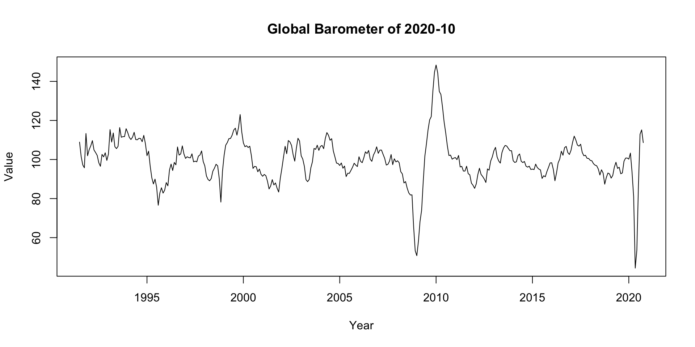
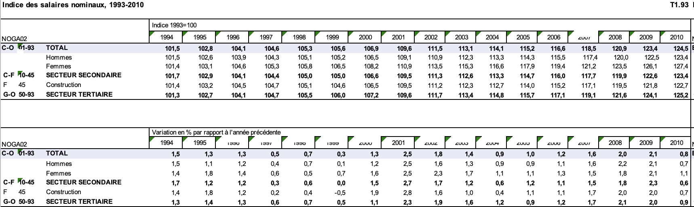
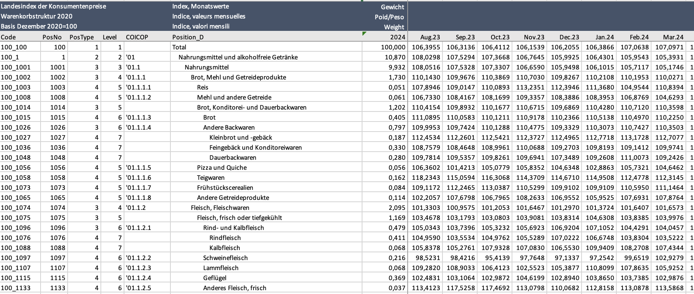
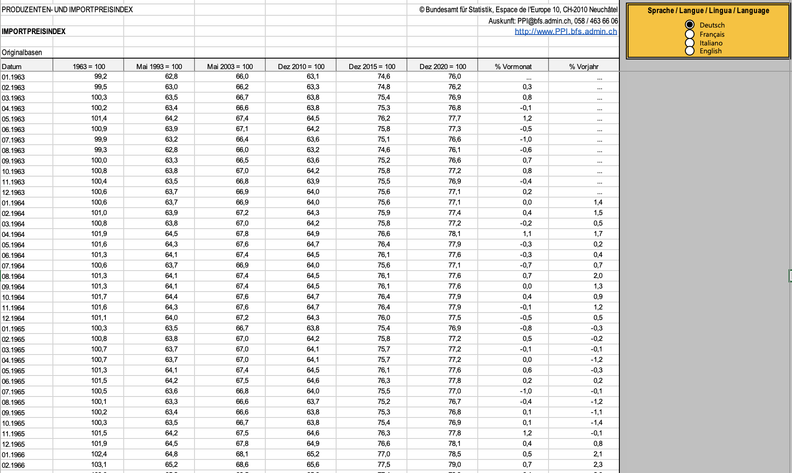
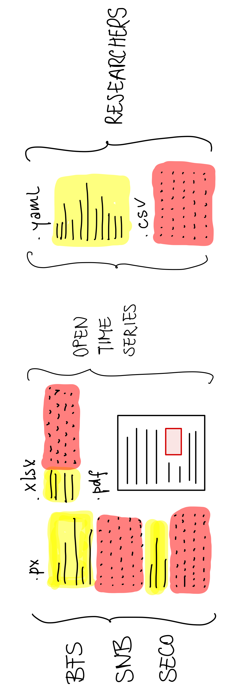

Non-Rectangular Data in Economic Research
"","ch.kof.barometer"
"1",91.603983195147
"2",79.6110546651818
"3",89.5461510457633
"4",94.726562227573
"5",95.2760107540196
"6",91.6999806524614
"7",94.7603265991512
"8",98.9374845836479
"9",99.250530216109
"10",100.695954080549
"11",95.1439024740007
"12",93.829329862478
"13",99.6345882016597
"14",101.39972459498
"15",103.383161629919
"16",96.4129787522254
"17",95.50120124585
"18",94.9646448181194
"19",91.233122719892
"20",93.1004146432815
"21",98.0752849285184
"22",94.236093793915
"23",94.2859219912958
"24",97.7390410371803
"25",103.278993334549
"26",107.114063330872
"27",101.53317250345
"28",100.205407508852
"29",101.480860647209
"30",105.76018993057
"31",105.579338137316
"32",104.85132143875
"33",114.405048633553
"34",113.763660642047
"35",116.46694315049
"36",114.548720319861
"37",107.583745768171
"38",114.277680917615
"39",112.077984311711
"40",107.257185992024
"41",106.197941190568
"42",106.98878933386
"43",105.924221966025
"44",109.038824304608
"45",104.775554689306$ch.kof.barometer
Jan Feb Mar Apr May Jun Jul
1991 91.57504 79.53105 89.50845 94.71091 95.26270 91.67145 94.74482
1992 99.68632 101.41520 103.38122 96.35979 95.46473 95.36180 91.39628
1993 103.50851 107.53754 101.88537 100.35557 101.81514 106.14673 105.75187
1994 107.81624 114.71097 112.46958 107.46705 106.58529 107.41302 106.14842
1995 95.76172 99.84018 97.12989 94.20309 97.58069 95.25301 94.64903
1996 100.30615 95.13143 98.31668 96.34335 97.02751 98.36555 101.28519
1997 105.47700 108.54294 108.38357 104.89960 110.32622 105.89414 108.37416
1998 101.11502 101.98006 99.62854 100.44330 102.81459 97.47436 102.10801
1999 98.75857 96.81107 96.28431 102.18357 104.49511 106.78198 103.65236
2000 106.62266 103.34601 110.53961 107.24278 105.65439 105.87957 101.08083
2001 97.13840 90.27531 88.85108 92.25366 88.07685 94.47126 94.07270
2002 92.93500 100.20671 100.52589 99.03324 101.39272 98.53135 95.15794
2003 96.53620 93.22292 94.10471 92.33771 96.22000 95.11925 102.27880
2004 108.57024 108.29638 108.70113 110.05701 108.61137 105.43259 105.32111
2005 98.08288 101.50843 99.43108 101.48284 100.47589 102.32451 104.59099
2006 108.89328 107.65448 108.14470 108.14270 106.69557 108.72668 103.92960
2007 105.24806 104.10333 105.17709 102.24340 99.95810 102.95250 100.32204
2008 100.77636 99.58042 95.54649 93.26720 95.37317 94.26056 92.74830
2009 75.92066 75.11327 76.44985 80.46283 90.66058 95.05934 99.06281
2010 107.49758 115.97087 115.19590 115.92271 116.12394 113.58491 111.09162
2011 102.39483 100.56263 103.99876 101.23820 98.10660 96.35774 89.81766
2012 95.53959 95.40460 97.62434 99.14174 96.01152 98.20214 98.14416
2013 102.42394 106.99968 104.31953 101.49982 102.78206 101.63454 104.32705
2014 105.56431 108.05368 107.52184 105.36112 103.45159 103.83606 100.77877
2015 96.18364 82.28793 86.97697 85.54300 94.35281 93.00302 98.34795
2016 99.26620 105.03412 103.21317 105.97274 103.05682 104.98433 103.91627
2017 103.45609 106.14024 108.36293 107.73195 108.90658 109.49584 107.60700
2018 108.76993 103.74598 100.45645 102.01676 98.86985 96.82283 99.00343
2019 96.11345 99.08930 100.21432 97.79180 99.86610 100.46514 95.18931
2020 101.31326 99.19784 80.84613 53.77948 54.52789 89.55419 111.47975
2021 101.67227 109.99851 116.47131 129.49907 127.25219 118.05396 118.72471
2022 101.48005 98.64009 92.12077 96.17228 90.94838 95.66989 91.65214
2023 94.95399 92.07723 96.92175 92.61790 89.77803 88.04651 90.64502
2024 98.78430 100.13656 101.06959 100.42927 105.69527 103.27359 101.30278
Aug Sep Oct Nov Dec
1991 98.93640 99.26141 100.71002 95.15787 93.79861
1992 93.47130 98.48283 94.40681 94.66317 98.10118
1993 105.16233 114.78658 113.98105 116.86545 114.95653
1994 109.46828 105.22222 101.68911 103.91218 106.47769
1995 97.40310 98.62190 96.39974 99.09210 98.32937
1996 99.11275 100.95170 98.62671 103.03717 103.03953
1997 106.83725 104.91178 109.35125 102.04927 101.45575
1998 96.31298 96.27376 95.16693 95.76079 102.45284
1999 108.10111 105.49037 107.90578 111.40762 108.62065
2000 99.03489 98.82052 100.57211 100.24511 97.62849
2001 93.04801 89.81897 82.86673 84.09271 88.46906
2002 94.08462 95.14027 97.13527 96.62731 98.32233
2003 104.35698 105.39086 107.31920 109.45911 108.70998
2004 102.59918 101.48530 102.09622 99.71136 98.28766
2005 105.06117 106.81995 106.82675 107.27284 107.01159
2006 105.79629 103.57408 103.70742 106.06305 106.75046
2007 100.86736 103.60807 99.40742 102.24202 101.22786
2008 89.95533 85.54116 85.50682 77.78360 76.27463
2009 102.55381 107.49862 108.04149 110.45752 112.26590
2010 107.92481 106.80163 104.43971 104.64720 102.03525
2011 83.71787 83.12399 88.06418 91.67518 94.78590
2012 105.34800 106.25465 100.65624 100.21944 101.60317
2013 105.82716 107.14171 106.00376 104.84234 106.43821
2014 99.48194 98.65772 98.45766 99.01328 96.52192
2015 100.79792 99.39485 100.73702 101.46847 100.19885
2016 101.92558 103.11681 102.03400 100.59665 102.64476
2017 105.59390 109.31080 108.92077 109.07440 109.62180
2018 96.95405 99.28214 97.75496 98.85785 97.50767
2019 96.36902 95.86437 95.61992 97.49875 97.70250
2020 117.39267 110.49880 112.25134 104.55102 105.63953
2021 108.79522 109.18446 107.04276 103.67571 100.13704
2022 89.44216 88.98771 87.45793 91.13499 93.37766
2023 91.01289 93.93412 94.50035 98.45687 100.63025
2024 104.22429 103.99759 99.72146 101.77576 $ch.kof.barometer
$ch.kof.barometer$url
[1] "https://kof.ethz.ch/en/forecasts-and-indicators/indicators/kof-economic-barometer.html"
$ch.kof.barometer$source
[1] "KOF Swiss Economic Institute"
$ch.kof.barometer$country
[1] "Switzerland"
$ch.kof.barometer$dataset
[1] "KOF Economic Barometer"
$ch.kof.barometer$variable
[1] "KOF Economic Barometer"



$ch.kof.barometer
date value
1 1991-01-01 91.57504
2 1991-02-01 79.53105
3 1991-03-01 89.50845
4 1991-04-01 94.71091
5 1991-05-01 95.26270
6 1991-06-01 91.67145
7 1991-07-01 94.74482
8 1991-08-01 98.93640
9 1991-09-01 99.26141
10 1991-10-01 100.71002
11 1991-11-01 95.15787
12 1991-12-01 93.79861
13 1992-01-01 99.68632
14 1992-02-01 101.41520
15 1992-03-01 103.38122
16 1992-04-01 96.35979
17 1992-05-01 95.46473
18 1992-06-01 95.36180
19 1992-07-01 91.39628
20 1992-08-01 93.47130
21 1992-09-01 98.48283
22 1992-10-01 94.40681
23 1992-11-01 94.66317
24 1992-12-01 98.10118
25 1993-01-01 103.50851
26 1993-02-01 107.53754
27 1993-03-01 101.88537
28 1993-04-01 100.35557
29 1993-05-01 101.81514
30 1993-06-01 106.14673
31 1993-07-01 105.75187
32 1993-08-01 105.16233
33 1993-09-01 114.78658
34 1993-10-01 113.98105
35 1993-11-01 116.86545
36 1993-12-01 114.95653
37 1994-01-01 107.81624
38 1994-02-01 114.71097
39 1994-03-01 112.46958
40 1994-04-01 107.46705
41 1994-05-01 106.58529
42 1994-06-01 107.41302
43 1994-07-01 106.14842
44 1994-08-01 109.46828
45 1994-09-01 105.22222
46 1994-10-01 101.68911
47 1994-11-01 103.91218
48 1994-12-01 106.47769
49 1995-01-01 95.76172
50 1995-02-01 99.84018
51 1995-03-01 97.12989
52 1995-04-01 94.20309
53 1995-05-01 97.58069
54 1995-06-01 95.25301
55 1995-07-01 94.64903
56 1995-08-01 97.40310
57 1995-09-01 98.62190
58 1995-10-01 96.39974
59 1995-11-01 99.09210
60 1995-12-01 98.32937
61 1996-01-01 100.30615
62 1996-02-01 95.13143
63 1996-03-01 98.31668
64 1996-04-01 96.34335
65 1996-05-01 97.02751
66 1996-06-01 98.36555
67 1996-07-01 101.28519
68 1996-08-01 99.11275
69 1996-09-01 100.95170
70 1996-10-01 98.62671
71 1996-11-01 103.03717
72 1996-12-01 103.03953
73 1997-01-01 105.47700
74 1997-02-01 108.54294
75 1997-03-01 108.38357
76 1997-04-01 104.89960
77 1997-05-01 110.32622
78 1997-06-01 105.89414
79 1997-07-01 108.37416
80 1997-08-01 106.83725
81 1997-09-01 104.91178
82 1997-10-01 109.35125
83 1997-11-01 102.04927
84 1997-12-01 101.45575
85 1998-01-01 101.11502
86 1998-02-01 101.98006
87 1998-03-01 99.62854
88 1998-04-01 100.44330
89 1998-05-01 102.81459
90 1998-06-01 97.47436
91 1998-07-01 102.10801
92 1998-08-01 96.31298
93 1998-09-01 96.27376
94 1998-10-01 95.16693
95 1998-11-01 95.76079
96 1998-12-01 102.45284
97 1999-01-01 98.75857
98 1999-02-01 96.81107
99 1999-03-01 96.28431
100 1999-04-01 102.18357
101 1999-05-01 104.49511
102 1999-06-01 106.78198
103 1999-07-01 103.65236
104 1999-08-01 108.10111
105 1999-09-01 105.49037
106 1999-10-01 107.90578
107 1999-11-01 111.40762
108 1999-12-01 108.62065
109 2000-01-01 106.62266
110 2000-02-01 103.34601
111 2000-03-01 110.53961
112 2000-04-01 107.24278
113 2000-05-01 105.65439
114 2000-06-01 105.87957
115 2000-07-01 101.08083
116 2000-08-01 99.03489
117 2000-09-01 98.82052
118 2000-10-01 100.57211
119 2000-11-01 100.24511
120 2000-12-01 97.62849
121 2001-01-01 97.13840
122 2001-02-01 90.27531
123 2001-03-01 88.85108
124 2001-04-01 92.25366
125 2001-05-01 88.07685
126 2001-06-01 94.47126
127 2001-07-01 94.07270
128 2001-08-01 93.04801
129 2001-09-01 89.81897
130 2001-10-01 82.86673
131 2001-11-01 84.09271
132 2001-12-01 88.46906
133 2002-01-01 92.93500
134 2002-02-01 100.20671
135 2002-03-01 100.52589
136 2002-04-01 99.03324
137 2002-05-01 101.39272
138 2002-06-01 98.53135
139 2002-07-01 95.15794
140 2002-08-01 94.08462
141 2002-09-01 95.14027
142 2002-10-01 97.13527
143 2002-11-01 96.62731
144 2002-12-01 98.32233
145 2003-01-01 96.53620
146 2003-02-01 93.22292
147 2003-03-01 94.10471
148 2003-04-01 92.33771
149 2003-05-01 96.22000
150 2003-06-01 95.11925
151 2003-07-01 102.27880
152 2003-08-01 104.35698
153 2003-09-01 105.39086
154 2003-10-01 107.31920
155 2003-11-01 109.45911
156 2003-12-01 108.70998
157 2004-01-01 108.57024
158 2004-02-01 108.29638
159 2004-03-01 108.70113
160 2004-04-01 110.05701
161 2004-05-01 108.61137
162 2004-06-01 105.43259
163 2004-07-01 105.32111
164 2004-08-01 102.59918
165 2004-09-01 101.48530
166 2004-10-01 102.09622
167 2004-11-01 99.71136
168 2004-12-01 98.28766
169 2005-01-01 98.08288
170 2005-02-01 101.50843
171 2005-03-01 99.43108
172 2005-04-01 101.48284
173 2005-05-01 100.47589
174 2005-06-01 102.32451
175 2005-07-01 104.59099
176 2005-08-01 105.06117
177 2005-09-01 106.81995
178 2005-10-01 106.82675
179 2005-11-01 107.27284
180 2005-12-01 107.01159
181 2006-01-01 108.89328
182 2006-02-01 107.65448
183 2006-03-01 108.14470
184 2006-04-01 108.14270
185 2006-05-01 106.69557
186 2006-06-01 108.72668
187 2006-07-01 103.92960
188 2006-08-01 105.79629
189 2006-09-01 103.57408
190 2006-10-01 103.70742
191 2006-11-01 106.06305
192 2006-12-01 106.75046
193 2007-01-01 105.24806
194 2007-02-01 104.10333
195 2007-03-01 105.17709
196 2007-04-01 102.24340
197 2007-05-01 99.95810
198 2007-06-01 102.95250
199 2007-07-01 100.32204
200 2007-08-01 100.86736
201 2007-09-01 103.60807
202 2007-10-01 99.40742
203 2007-11-01 102.24202
204 2007-12-01 101.22786
205 2008-01-01 100.77636
206 2008-02-01 99.58042
207 2008-03-01 95.54649
208 2008-04-01 93.26720
209 2008-05-01 95.37317
210 2008-06-01 94.26056
211 2008-07-01 92.74830
212 2008-08-01 89.95533
213 2008-09-01 85.54116
214 2008-10-01 85.50682
215 2008-11-01 77.78360
216 2008-12-01 76.27463
217 2009-01-01 75.92066
218 2009-02-01 75.11327
219 2009-03-01 76.44985
220 2009-04-01 80.46283
221 2009-05-01 90.66058
222 2009-06-01 95.05934
223 2009-07-01 99.06281
224 2009-08-01 102.55381
225 2009-09-01 107.49862
226 2009-10-01 108.04149
227 2009-11-01 110.45752
228 2009-12-01 112.26590
229 2010-01-01 107.49758
230 2010-02-01 115.97087
231 2010-03-01 115.19590
232 2010-04-01 115.92271
233 2010-05-01 116.12394
234 2010-06-01 113.58491
235 2010-07-01 111.09162
236 2010-08-01 107.92481
237 2010-09-01 106.80163
238 2010-10-01 104.43971
239 2010-11-01 104.64720
240 2010-12-01 102.03525
241 2011-01-01 102.39483
242 2011-02-01 100.56263
243 2011-03-01 103.99876
244 2011-04-01 101.23820
245 2011-05-01 98.10660
246 2011-06-01 96.35774
247 2011-07-01 89.81766
248 2011-08-01 83.71787
249 2011-09-01 83.12399
250 2011-10-01 88.06418
251 2011-11-01 91.67518
252 2011-12-01 94.78590
253 2012-01-01 95.53959
254 2012-02-01 95.40460
255 2012-03-01 97.62434
256 2012-04-01 99.14174
257 2012-05-01 96.01152
258 2012-06-01 98.20214
259 2012-07-01 98.14416
260 2012-08-01 105.34800
261 2012-09-01 106.25465
262 2012-10-01 100.65624
263 2012-11-01 100.21944
264 2012-12-01 101.60317
265 2013-01-01 102.42394
266 2013-02-01 106.99968
267 2013-03-01 104.31953
268 2013-04-01 101.49982
269 2013-05-01 102.78206
270 2013-06-01 101.63454
271 2013-07-01 104.32705
272 2013-08-01 105.82716
273 2013-09-01 107.14171
274 2013-10-01 106.00376
275 2013-11-01 104.84234
276 2013-12-01 106.43821
277 2014-01-01 105.56431
278 2014-02-01 108.05368
279 2014-03-01 107.52184
280 2014-04-01 105.36112
281 2014-05-01 103.45159
282 2014-06-01 103.83606
283 2014-07-01 100.77877
284 2014-08-01 99.48194
285 2014-09-01 98.65772
286 2014-10-01 98.45766
287 2014-11-01 99.01328
288 2014-12-01 96.52192
289 2015-01-01 96.18364
290 2015-02-01 82.28793
291 2015-03-01 86.97697
292 2015-04-01 85.54300
293 2015-05-01 94.35281
294 2015-06-01 93.00302
295 2015-07-01 98.34795
296 2015-08-01 100.79792
297 2015-09-01 99.39485
298 2015-10-01 100.73702
299 2015-11-01 101.46847
300 2015-12-01 100.19885
301 2016-01-01 99.26620
302 2016-02-01 105.03412
303 2016-03-01 103.21317
304 2016-04-01 105.97274
305 2016-05-01 103.05682
306 2016-06-01 104.98433
307 2016-07-01 103.91627
308 2016-08-01 101.92558
309 2016-09-01 103.11681
310 2016-10-01 102.03400
311 2016-11-01 100.59665
312 2016-12-01 102.64476
313 2017-01-01 103.45609
314 2017-02-01 106.14024
315 2017-03-01 108.36293
316 2017-04-01 107.73195
317 2017-05-01 108.90658
318 2017-06-01 109.49584
319 2017-07-01 107.60700
320 2017-08-01 105.59390
321 2017-09-01 109.31080
322 2017-10-01 108.92077
323 2017-11-01 109.07440
324 2017-12-01 109.62180
325 2018-01-01 108.76993
326 2018-02-01 103.74598
327 2018-03-01 100.45645
328 2018-04-01 102.01676
329 2018-05-01 98.86985
330 2018-06-01 96.82283
331 2018-07-01 99.00343
332 2018-08-01 96.95405
333 2018-09-01 99.28214
334 2018-10-01 97.75496
335 2018-11-01 98.85785
336 2018-12-01 97.50767
337 2019-01-01 96.11345
338 2019-02-01 99.08930
339 2019-03-01 100.21432
340 2019-04-01 97.79180
341 2019-05-01 99.86610
342 2019-06-01 100.46514
343 2019-07-01 95.18931
344 2019-08-01 96.36902
345 2019-09-01 95.86437
346 2019-10-01 95.61992
347 2019-11-01 97.49875
348 2019-12-01 97.70250
349 2020-01-01 101.31326
350 2020-02-01 99.19784
351 2020-03-01 80.84613
352 2020-04-01 53.77948
353 2020-05-01 54.52789
354 2020-06-01 89.55419
355 2020-07-01 111.47975
356 2020-08-01 117.39267
357 2020-09-01 110.49880
358 2020-10-01 112.25134
359 2020-11-01 104.55102
360 2020-12-01 105.63953
361 2021-01-01 101.67227
362 2021-02-01 109.99851
363 2021-03-01 116.47131
364 2021-04-01 129.49907
365 2021-05-01 127.25219
366 2021-06-01 118.05396
367 2021-07-01 118.72471
368 2021-08-01 108.79522
369 2021-09-01 109.18446
370 2021-10-01 107.04276
371 2021-11-01 103.67571
372 2021-12-01 100.13704
373 2022-01-01 101.48005
374 2022-02-01 98.64009
375 2022-03-01 92.12077
376 2022-04-01 96.17228
377 2022-05-01 90.94838
378 2022-06-01 95.66989
379 2022-07-01 91.65214
380 2022-08-01 89.44216
381 2022-09-01 88.98771
382 2022-10-01 87.45793
383 2022-11-01 91.13499
384 2022-12-01 93.37766
385 2023-01-01 94.95399
386 2023-02-01 92.07723
387 2023-03-01 96.92175
388 2023-04-01 92.61790
389 2023-05-01 89.77803
390 2023-06-01 88.04651
391 2023-07-01 90.64502
392 2023-08-01 91.01289
393 2023-09-01 93.93412
394 2023-10-01 94.50035
395 2023-11-01 98.45687
396 2023-12-01 100.63025
397 2024-01-01 98.78430
398 2024-02-01 100.13656
399 2024-03-01 101.06959
400 2024-04-01 100.42927
401 2024-05-01 105.69527
402 2024-06-01 103.27359
403 2024-07-01 101.30278
404 2024-08-01 104.22429
405 2024-09-01 103.99759
406 2024-10-01 99.72146
407 2024-11-01 101.77576$ch.kof.barometer
Jan Feb Mar Apr May Jun Jul
1991 91.57504 79.53105 89.50845 94.71091 95.26270 91.67145 94.74482
1992 99.68632 101.41520 103.38122 96.35979 95.46473 95.36180 91.39628
1993 103.50851 107.53754 101.88537 100.35557 101.81514 106.14673 105.75187
1994 107.81624 114.71097 112.46958 107.46705 106.58529 107.41302 106.14842
1995 95.76172 99.84018 97.12989 94.20309 97.58069 95.25301 94.64903
1996 100.30615 95.13143 98.31668 96.34335 97.02751 98.36555 101.28519
1997 105.47700 108.54294 108.38357 104.89960 110.32622 105.89414 108.37416
1998 101.11502 101.98006 99.62854 100.44330 102.81459 97.47436 102.10801
1999 98.75857 96.81107 96.28431 102.18357 104.49511 106.78198 103.65236
2000 106.62266 103.34601 110.53961 107.24278 105.65439 105.87957 101.08083
2001 97.13840 90.27531 88.85108 92.25366 88.07685 94.47126 94.07270
2002 92.93500 100.20671 100.52589 99.03324 101.39272 98.53135 95.15794
2003 96.53620 93.22292 94.10471 92.33771 96.22000 95.11925 102.27880
2004 108.57024 108.29638 108.70113 110.05701 108.61137 105.43259 105.32111
2005 98.08288 101.50843 99.43108 101.48284 100.47589 102.32451 104.59099
2006 108.89328 107.65448 108.14470 108.14270 106.69557 108.72668 103.92960
2007 105.24806 104.10333 105.17709 102.24340 99.95810 102.95250 100.32204
2008 100.77636 99.58042 95.54649 93.26720 95.37317 94.26056 92.74830
2009 75.92066 75.11327 76.44985 80.46283 90.66058 95.05934 99.06281
2010 107.49758 115.97087 115.19590 115.92271 116.12394 113.58491 111.09162
2011 102.39483 100.56263 103.99876 101.23820 98.10660 96.35774 89.81766
2012 95.53959 95.40460 97.62434 99.14174 96.01152 98.20214 98.14416
2013 102.42394 106.99968 104.31953 101.49982 102.78206 101.63454 104.32705
2014 105.56431 108.05368 107.52184 105.36112 103.45159 103.83606 100.77877
2015 96.18364 82.28793 86.97697 85.54300 94.35281 93.00302 98.34795
2016 99.26620 105.03412 103.21317 105.97274 103.05682 104.98433 103.91627
2017 103.45609 106.14024 108.36293 107.73195 108.90658 109.49584 107.60700
2018 108.76993 103.74598 100.45645 102.01676 98.86985 96.82283 99.00343
2019 96.11345 99.08930 100.21432 97.79180 99.86610 100.46514 95.18931
2020 101.31326 99.19784 80.84613 53.77948 54.52789 89.55419 111.47975
2021 101.67227 109.99851 116.47131 129.49907 127.25219 118.05396 118.72471
2022 101.48005 98.64009 92.12077 96.17228 90.94838 95.66989 91.65214
2023 94.95399 92.07723 96.92175 92.61790 89.77803 88.04651 90.64502
2024 98.78430 100.13656 101.06959 100.42927 105.69527 103.27359 101.30278
Aug Sep Oct Nov Dec
1991 98.93640 99.26141 100.71002 95.15787 93.79861
1992 93.47130 98.48283 94.40681 94.66317 98.10118
1993 105.16233 114.78658 113.98105 116.86545 114.95653
1994 109.46828 105.22222 101.68911 103.91218 106.47769
1995 97.40310 98.62190 96.39974 99.09210 98.32937
1996 99.11275 100.95170 98.62671 103.03717 103.03953
1997 106.83725 104.91178 109.35125 102.04927 101.45575
1998 96.31298 96.27376 95.16693 95.76079 102.45284
1999 108.10111 105.49037 107.90578 111.40762 108.62065
2000 99.03489 98.82052 100.57211 100.24511 97.62849
2001 93.04801 89.81897 82.86673 84.09271 88.46906
2002 94.08462 95.14027 97.13527 96.62731 98.32233
2003 104.35698 105.39086 107.31920 109.45911 108.70998
2004 102.59918 101.48530 102.09622 99.71136 98.28766
2005 105.06117 106.81995 106.82675 107.27284 107.01159
2006 105.79629 103.57408 103.70742 106.06305 106.75046
2007 100.86736 103.60807 99.40742 102.24202 101.22786
2008 89.95533 85.54116 85.50682 77.78360 76.27463
2009 102.55381 107.49862 108.04149 110.45752 112.26590
2010 107.92481 106.80163 104.43971 104.64720 102.03525
2011 83.71787 83.12399 88.06418 91.67518 94.78590
2012 105.34800 106.25465 100.65624 100.21944 101.60317
2013 105.82716 107.14171 106.00376 104.84234 106.43821
2014 99.48194 98.65772 98.45766 99.01328 96.52192
2015 100.79792 99.39485 100.73702 101.46847 100.19885
2016 101.92558 103.11681 102.03400 100.59665 102.64476
2017 105.59390 109.31080 108.92077 109.07440 109.62180
2018 96.95405 99.28214 97.75496 98.85785 97.50767
2019 96.36902 95.86437 95.61992 97.49875 97.70250
2020 117.39267 110.49880 112.25134 104.55102 105.63953
2021 108.79522 109.18446 107.04276 103.67571 100.13704
2022 89.44216 88.98771 87.45793 91.13499 93.37766
2023 91.01289 93.93412 94.50035 98.45687 100.63025
2024 104.22429 103.99759 99.72146 101.77576 $ch.kof.barometer
$ch.kof.barometer$url
[1] "https://kof.ethz.ch/en/forecasts-and-indicators/indicators/kof-economic-barometer.html"
$ch.kof.barometer$source
[1] "KOF Swiss Economic Institute"
$ch.kof.barometer$country
[1] "Switzerland"
$ch.kof.barometer$dataset
[1] "KOF Economic Barometer"
$ch.kof.barometer$variable
[1] "KOF Economic Barometer"If you are interested in working with us or if you have any questions: